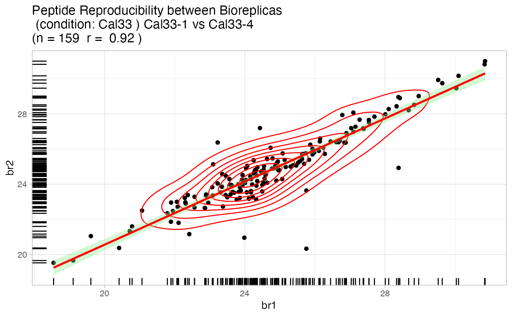
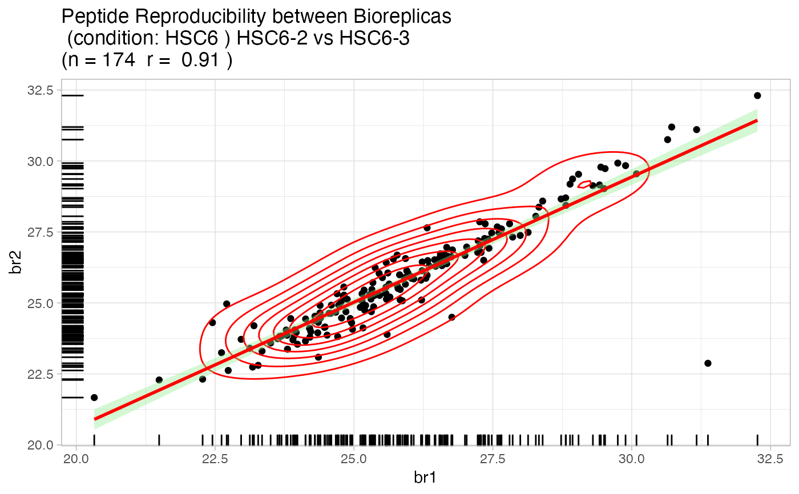

Quality Control analysis of the MaxQuant evidence file
artmsQualityControlEvidenceBasic(
evidence_file,
keys_file,
prot_exp = c("AB", "PH", "UB", "AC", "APMS", "PTM:XXX:yy"),
fractions = 0,
output_dir = "qc_basic",
output_name = "qcBasic_evidence",
isSILAC = FALSE,
plotINTDIST = FALSE,
plotREPRO = FALSE,
plotCORMAT = TRUE,
plotINTMISC = TRUE,
plotPTMSTATS = TRUE,
printPDF = TRUE,
verbose = TRUE
)
Arguments
| evidence_file |
(char or data.frame) The evidence file path and name, or
data.frame |
| keys_file |
(char or data.frame) The keys file path and name or
data.frame |
| prot_exp |
(char) Proteomics experiment. 6 options available:
APMS: affinity purification mass spectrometry
AB: protein abundance
PH: protein phosphorylation
UB: protein ubiquitination (aka ubiquitylation)
AC: protein acetylation
PTM:XXX:yy : User defined PTM. Replace XXX with 1 or more 1-letter amino
acid codes on which to find modifications (all uppercase). Replace yy with
modification name used within the evidence file (require lowercase characters).
Example for phosphorylation: PTM:STY:ph will find modifications on
aa S,T,Y with this example format _AAGGAPS(ph)PPPPVR_. This means that
the user could select phosphorylation as PH or PTM:STY:ph
|
| fractions |
(binary) Are there fractions in this experiment? |
| output_dir |
(char) Name for the folder to output the results plots.
Default is "qc_basic". |
| output_name |
(char) prefix output name (no extension).
Default: "qcBasic_evidence" |
| isSILAC |
if TRUE processes SILAC input files. Default is FALSE |
| plotINTDIST |
if TRUE plots both Box-dot plot
and Jitter plot of biological replicates based on MS (raw)
intensity values, otherwise FALSE (default) |
| plotREPRO |
if TRUE plots a correlation dotplot for all the
combinations of biological replicates of conditions, based on MS Intensity
values using features (peptide+charge). Otherwise FALSE (default) |
| plotCORMAT |
if TRUE (default) plots a
Correlation matrix for all the biological replicates using
MS Intensity values, Clustering matrix of the MS Intensities |
| plotINTMISC |
if TRUE (default) plots several pages, including
bar plots of Total Sum of Intensities in BioReplicates,
Total Sum of Intensities in Conditions,
Total Peptide Counts in BioReplicates,
Total Peptide Counts in conditions separated by categories:
CON: contaminants, PROT peptides, REV reversed sequences used by
MaxQuant to estimate the FDR; Box plots of MS Intensity values per
biological replicates and conditions; bar plots of total intensity
(excluding contaminants) by bioreplicates and conditions; Barplots of
total feature counts by bioreplicates and conditions. |
| plotPTMSTATS |
IF TRUE (default) plots stats related to the
selected modification, including:
bar plot of peptide counts and intensities, broken by PTM/other
categories; bar plots of total sum-up of MS intensity values by
other/PTM categories. |
| printPDF |
If TRUE (default) prints out the pdfs. Warning: plot
objects are not returned due to the large number of them. |
| verbose |
(logical) TRUE (default) shows function messages |
Value
Quality control files and plots
Examples
artmsQualityControlEvidenceBasic(evidence_file = artms_data_ph_evidence,
keys_file = artms_data_ph_keys,
prot_exp = "PH",
isSILAC = FALSE,
plotINTDIST = FALSE,
plotREPRO = TRUE,
plotCORMAT = FALSE,
plotINTMISC = FALSE,
plotPTMSTATS = FALSE,
printPDF = FALSE,
verbose = FALSE)


# But we recommend the following test:
# 1. Go to a working directory:
# setwd("/path/to/your/working/directory/")
# 2. Run the following command to print out all the pdf files
# artmsQualityControlEvidenceBasic(evidence_file = artms_data_ph_evidence,
# keys_file = artms_data_ph_keys,
# prot_exp = "PH")
# 3. Check your working directory and you should find pdf files with
# all the QC plots